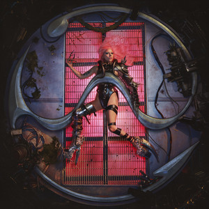

Rain On Me


Lyrics
I didn't ask for a free ride I only asked you to show me a real good time I never asked for the rainfall At least I showed up, you showed me nothing at all It's coming down on me Water like misery It's coming down on me I'm ready, rain on me I'd rather be dry, but at least I'm alive Rain on me, rain, rain Rain on me, rain, rain I'd rather be dry, but at least I'm alive Rain on me, rain, rain Rain on me ♪ Rain on me Mmh, oh yeah, baby Rain on me Livin' in a world where no one's innocent Oh, but at least we try, mmh Gotta live my truth, not keep it bottled in So I don't lose my mind, baby, yeah I can feel it on my skin (It's coming down on me) Teardrops on my face (Water like misery) Let it wash away my sins (It's coming down on me) Let it wash away, yeah I'd rather be dry, but at least I'm alive Rain on me, rain, rain Rain on me, rain, rain I'd rather be dry, but at least I'm alive Rain on me, rain, rain Rain (Rain) on (On) me Rain on me Rain on me Oh yeah, yeah Rain on me, ooh yeah Rain on me Rain on me, ooh Hands up to the sky I'll be your galaxy I'm about to fly Rain on me, tsunami Hands up to the sky I'll be your galaxy I'm about to fly Rain on me (Rain on me) I'd rather be dry, but at least I'm alive (Rain on me) Rain on me, rain, rain Rain on me, rain, rain (Rain on me) I'd rather be dry, but at least I'm alive (At least I'm alive) Rain on me, rain, rain (Rain on me) Rain on me (Rain on me) I hear the thunder coming down Won't you rain on me? Eh, eh, yeah (Rain on, woo) I hear the thunder coming down Won't you rain on me? Eh, eh, yeah Rain on me